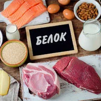
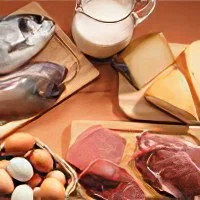
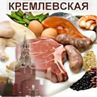
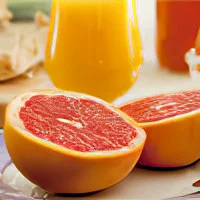
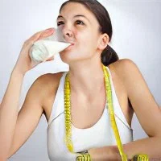

Белковые диеты
Белковые диеты – одна из самых популярных сегодня разновидностей диет.
Секрет ее популярности достаточно прост: при достаточно плотном питании, без вызывания чувства
голода, за непродолжительный период времени удается сбросить до нескольких десятков килограмм. У
белковых диет имеется большое количество разновидностей, самые популярные из которых –
низкоуглеводная диета доктора Аткинса и получившее широкое распространение в России так
называемая «кремлевская» диета, основу которой также составляют белковые продукты и продукты с
низким содержанием углеводов.
Белки: функции, норма + ТОП-продукты

Большинство людей в день употребляют не достаточное количество белковой пищи. Дефицит может
привести к серьезным проблемам со здоровьем. Многочисленные исследования доказывают, что
диеты с высоким содержанием белка помогают не только худеть, но и избавляться от некоторых
заболеваний.
Белковая диета «минус 5-7 кг за неделю»

Срок: 7 дней. Результат: -5 кг. Суть: суть белковой диеты отраженна в ее названии. Белковая
пища - это мясные продукты, рыба, молоко, кефир творог, яйца и пр. Все они позволяют
длительное время не испытывать чувства голода.
Кремлевская диета

Срок: 30 дней. Результат: -15 кг. Суть: в течение всего периода похудения человек питается
очень разнообразно и может есть всё, что ему хочется, но в пределах лимита набранных баллов.
Диета Магги

Срок: 14-28 дней. Результат: -8-15 кг. Суть: Диета Магги представляет собой одну из
разновидностей яичной диеты. Она относится к белковым низкоуглеводным диетам.
Молочная диета

Срок: 3-5-7 дней. Результат: -3-6 кг. Суть: Поклонники молочных продуктов для снижения веса
могут воспользоваться молочной диетой. Молоко богато витаминами, кальцием и минеральными
веществами. Литр молока наполняет организм белком в размере суточной нормы.